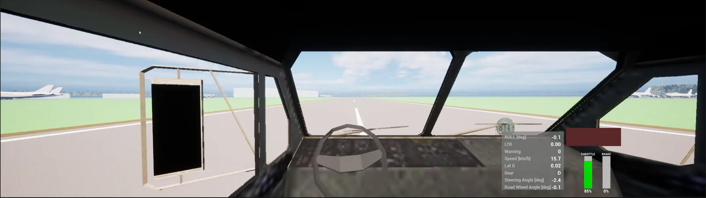
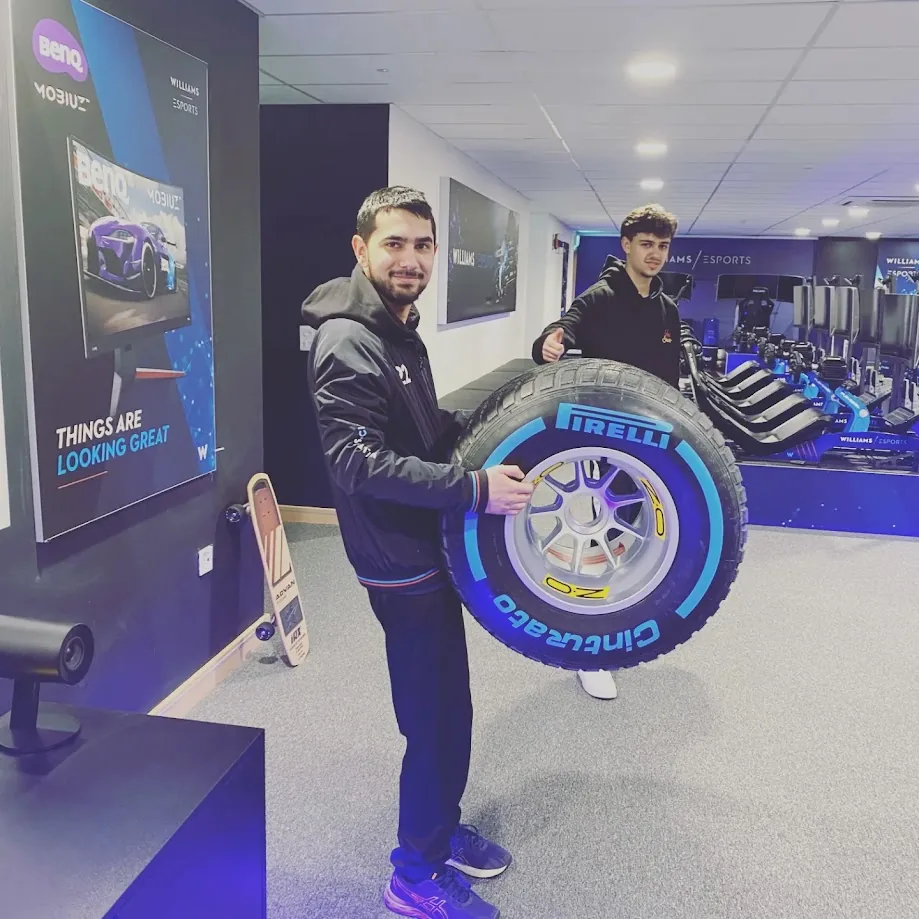
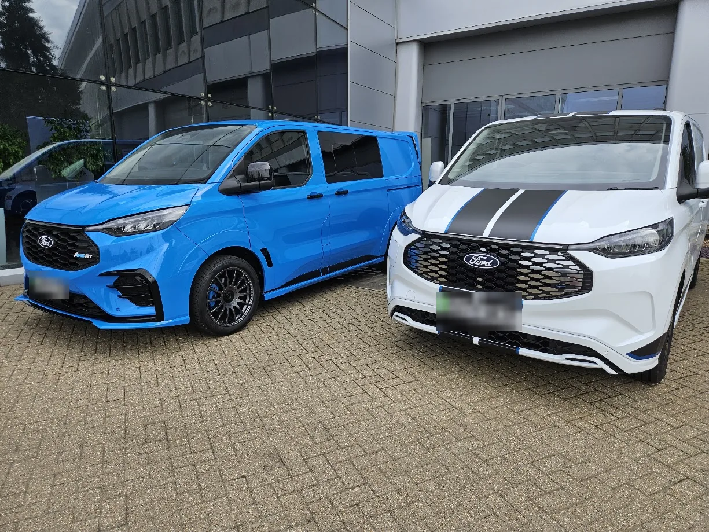
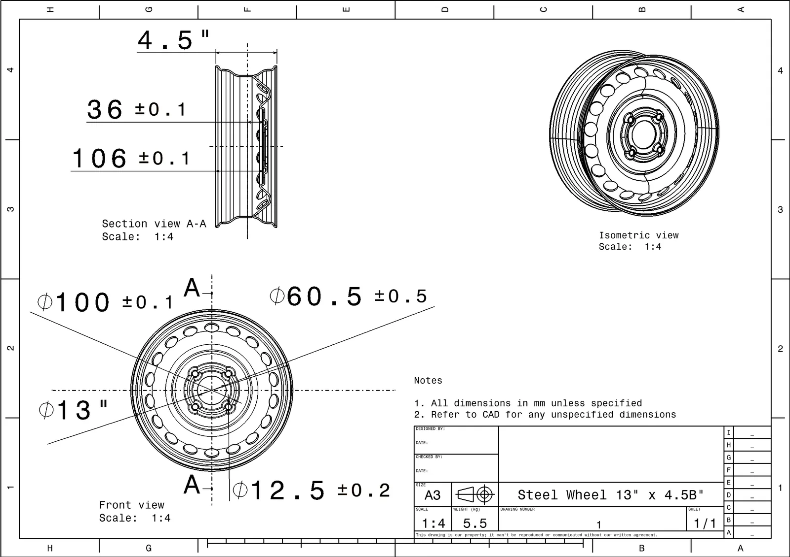
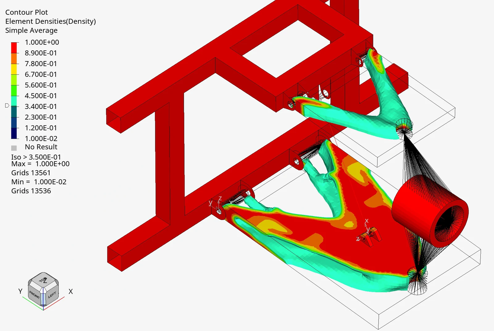
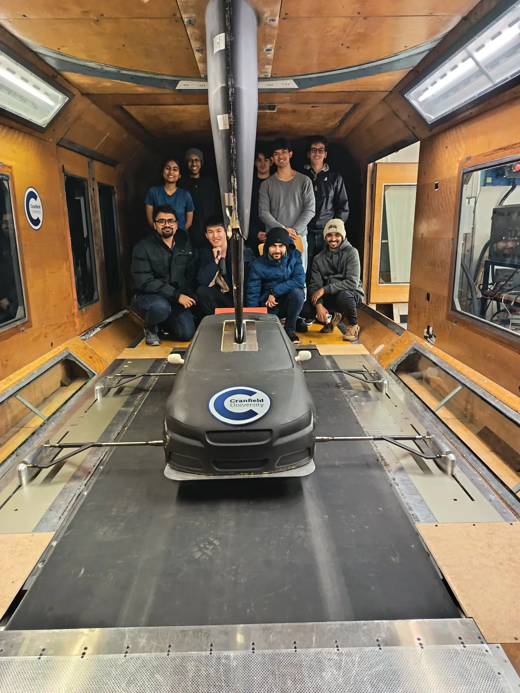
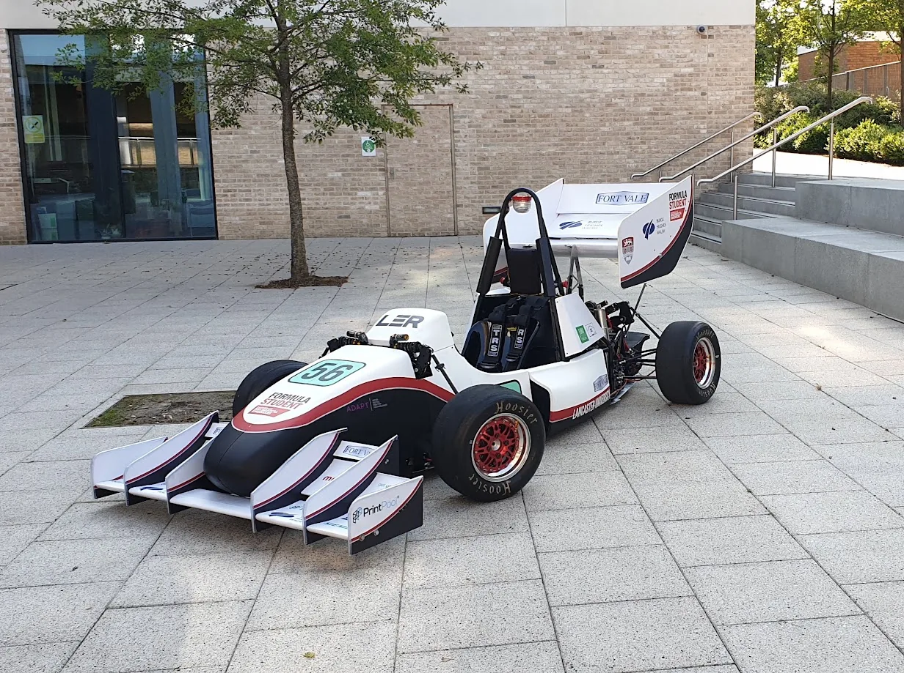
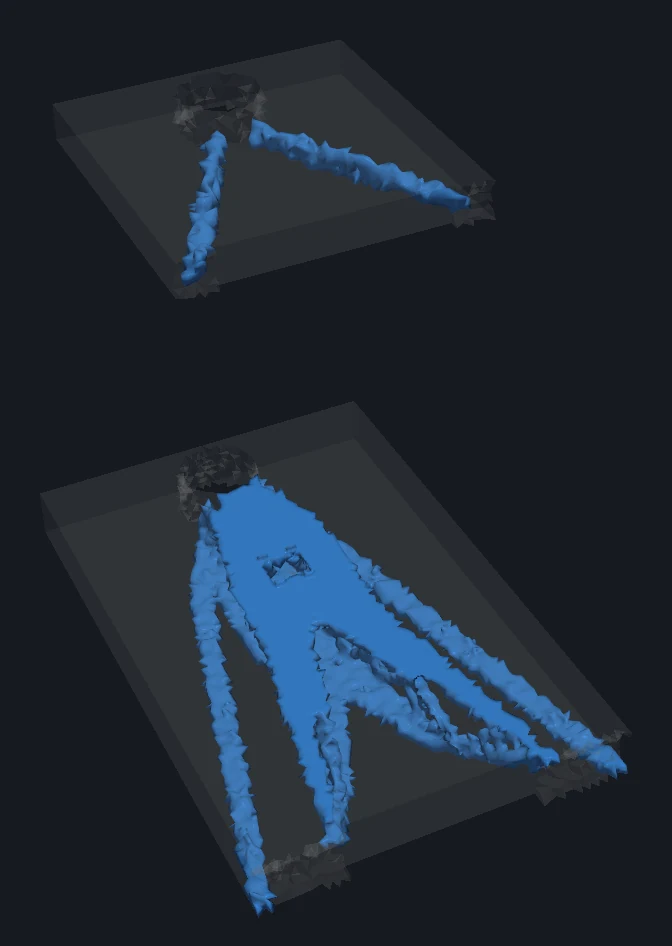

MSc Thesis
HGV Driver Simulator for Roll Stability
Cranfield University · 2026 · Individual research project
Real-time driver-in-the-loop simulator that estimates how close a 28.8-tonne 8×8 test truck is to wheel lift while it is being driven.
- Built a four-axle, two-axle-steered lateral model coupled to single-DoF roll and longitudinal dynamics in MATLAB/Simulink
- Verified within 0.2% of the analytical solution; yaw rate validated against test-truck data (NRMSE 14.8–16.5%)
Result: The predicted wheel-lift threshold roughly halves, from ~0.4 g to ~0.2 g, at the 0.8–0.9 Hz roll resonance. CoG height and longitudinal position are the dominant sensitivities.
View project →

Motorsport
Sim-Racing Performance Engineering
Atlassian Williams F1 Team Gaming · 2022–2026 · Volunteer sim-racing engineer
Telemetry-led setup and performance engineering for the official Williams Racing esports team.
- Analysed lap-time losses across 20+ circuits using MoTeC and bespoke telemetry tools
- Assessed balance, rotation, braking and traction from telemetry and structured driver feedback
- Turned findings into setup changes, including spring and anti-roll-bar stiffness
Result: Two consecutive fourth-place finishes in the F1 Sim Racing Teams' Championship against nine other teams.
View project →

Industry
Wheels & Jack Design and Release
Ford Motor Company (via Caresoft Global) · 2022–2025 · Design & Release Engineer
Production design release of wheels and jacks for Ford's global Transit programmes.
- Took 10 wheel designs and one jack design from concept to design-verification sign-off in parallel, planning analysis, prototype and test timing with suppliers
- Checked 30+ supplier models and drawings in CATIA V5; raised unmet requirements as digital pre-assembly issues, all resolved before tooling
- Defined DVP&R tests from the DFMEA, including wheel impact, biaxial, weathering and wrench effort
Result: 19 wheel and jack parts released across two Transit programmes. All 11 parallel designs were approved on first submission, on schedule.
View project →

Group Project
Quadricycle Vehicle & Mobility Service
Cranfield University · 2026 · Deputy Engineer, Vehicle Dynamics (wheels & tyres)
Conceptual design of a quadricycle and the mobility service built around it.
- Deputy engineer of the six-person vehicle dynamics department in a team of 19; led failure mode avoidance and chaired team meetings
- Derived the per-wheel design load from laden mass, worst-case weight distribution and a 1.5 load factor, then selected tyre and wheel against ETRTO and UNECE requirements
- Gave the ride engineer's handling model a cornering-stiffness range from two literature methods, up to ±30%, as there was no tyre test data
Result: Selected a 155/65 R13 73T tyre (365 kg capacity, 10.6% above the 330 kg design load) on an off-the-shelf 13 × 4.5 steel wheel.
View project →

MSc Module
Double Wishbone Arm Optimisation
Cranfield University · 2025 · Individual assignment
Material selection, topology optimisation and a fatigue check for the upper and lower arms of a double wishbone suspension.
- Chose 6061-T6 aluminium from Ashby charts in Granta, then ranked the shortlist with SAW and TOPSIS
- Calculated corner loads by hand (3 g vertical, 1 g longitudinal and lateral) and optimised both arms in OptiStruct against a 2 mm displacement limit
Result: Arms about 34% lighter (6.887 to 4.556 kg), with 1.95 mm peak displacement inside the 2 mm limit.
View project →

MSc Module
Wind Tunnel Testing
Cranfield University · 2026 · Group of five
Base-pressure measurements on a reference car model, and a ride-height sweep of a 35% DrivAer model on a moving ground.
- Corrected all 25 pressure-tap channels after the reference-pressure correction went into LabVIEW with the wrong sign
- Confirmed the axial load coefficient with two integration methods, within 2.3%
Result: Downforce rose as the DrivAer model was lowered, then levelled off at about 40–45 mm ride height in every set-up tested.
View project →

Formula Student
Front Upright & Brackets
Lancaster University · 2021 · Wheel Assemblies and Structures Engineer · Completed during COVID-19 restrictions
The front upright and its wishbone and steering brackets for Lancaster's 2021 electric Formula Student car.
- Designed the front upright and its three mounting brackets in SolidWorks from first-principles load calculations
- Verified them in ANSYS under braking, cornering and 3 g bump load cases, with mesh convergence within 0.3%
- Delivered manufacture-ready drawings with tolerances and design-for-manufacture considerations
Result: Front upright CNC-machined in-house from 6061 aluminium and fitted to the car; main body within the 1.5 safety-factor target, with 0.53 mm peak deflection under maximum braking (1 mm limit).
View project →

MEng Project
Formula Student EV Powertrain Model
Lancaster University · 2019–20 · Individual project
A MATLAB and Simulink model of Lancaster e-Racing's electric powertrain, built to check the hardware was safe before the car was tested.
- Modelled the EMRAX 208 motor with a PI current controller to match the real motor controller, and filtered current noise with a 550 Hz low-pass filter
- Modelled the 378 V, 90-cell battery and the car's longitudinal dynamics for the 75 m acceleration event
Result: Motor current stayed under the controller's 200 A rating, and the car covered just over 80 m in 5 s, beating the 75 m target.
View project →

MEng Industry Project
LOFT-E Loft Leg Thermal Analysis
Lancaster University with Cumbria Loft Boarding · 2021 · Group of five
How much heat a steel loft-boarding leg lets through the insulation, and what it would take to meet building regulations.
- Built an ANSYS steady-state thermal model of a section of loft, refining the mesh over 14 steps from 0.59 to 0.86 average element quality
- Compared leg materials by U-value and fitted a curve to find the thermal conductivity limit
Result: No metal leg meets the 0.16 W/m²K ceiling target; the material would need 0.92 W/m·K or less. The company publishes our report on its product page.
View project →

Personal Project
F1 25 Aero Map Regression
Python · October 2026 · Code public on GitHub
Separating front and rear ride-height effects on axle downforce, from my own controlled test runs in F1 25.
- Fitted a two-variable model in SciPy that matched Excel's LINEST exactly
- Tested it against a quadratic model with leave-one-out cross-validation, with pytest checks on the code
Result: Linear model kept: R² 0.9998 front and 0.997 rear, with 4.6 N front error on unseen points against 6.2 N for the overfitting quadratic.
View project →

Personal Project
Quadricycle Brake Balance Model
Python and FreeCAD · September 2026 – present
The first design question in my own two-seat quadricycle vehicle model: where should the brake balance sit?
- Built a Python braking model with load transfer and brake balance; a brake-split sweep agreed with theory within 0.02 percentage points
- Tested the effect of payload with the split fixed at 65% front
Result: Ideal front share of 55–71% across 0.2–0.8 grip. With a fixed split, two occupants and luggage cut usable grip from 92% to 83% and lengthened the stop from 90 km/h from 86.7 m to 96.0 m.
View project →

Personal Project
Double Wishbone Re-analysis
FreeCAD, PrePoMax and CalculiX · November 2026 – present
Re-checking my Cranfield suspension arm study in open-source tools, because I don't trust its fatigue result.
- Rebuilt and meshed both arms with 122,809 quadratic tetrahedral elements; the baseline mass matched the Cranfield model within 0.1%
- Running BESO topology optimisation with protected rings at the bores, a 2 mm knuckle limit and four load cases
Result: In progress. Next: model the optimised arm as real geometry and re-check statics and fatigue against the original targets.
View project →